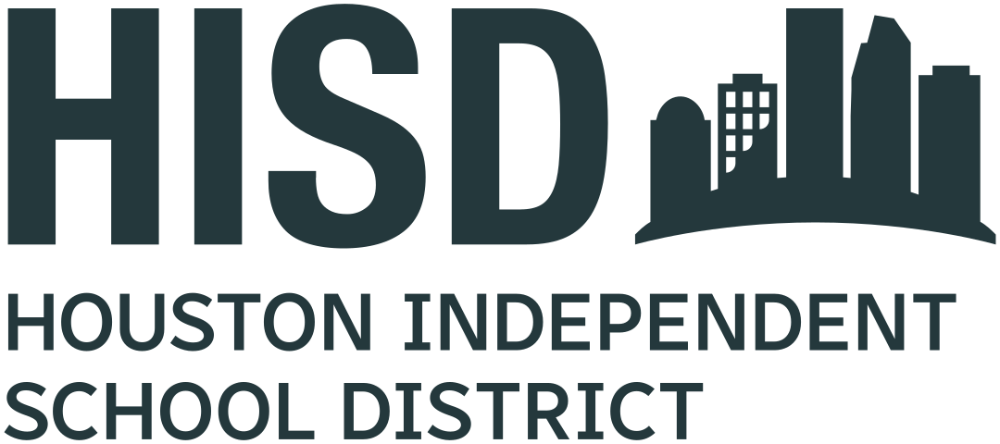

Internal
MEMORANDUM
This memo establishes the standard for HISD-branded print materials. All letterhead, reports, and memos should use the brand ribbon, the approved district logo, and the type roles defined in the print kit. When sending materials to a commercial printer, always specify Pantone and CMYK values from the color reference rather than RGB.
| Item | Owner | Due |
|---|---|---|
| Adopt the print kit for all campus newsletters | Campus comms leads | Aug 1, 2026 |
| Order letterhead using PMS 7467 C (Teal) | Procurement | Aug 15, 2026 |
| Replace legacy logos in templates | Office of Communications | Sep 1, 2026 |
The brand refresh consolidates the district's color palette into four primary and six secondary colors. Widow and orphan control keeps body copy clean across page breaks, and the running header and footer repeat the district name and page number on every page. This paragraph is intentionally long so that, in a multi-page memo, the pagination hygiene rules in print.css are exercised: paragraphs will not strand a single line at the top or bottom of a page, and headings stay attached to the content that follows them rather than floating alone at the foot of a page.
Screen preview only. Cmd-P (Ctrl-P) → "Save as PDF", US Letter, margins "Default", and enable "Background graphics" so the teal ribbon and table header print.